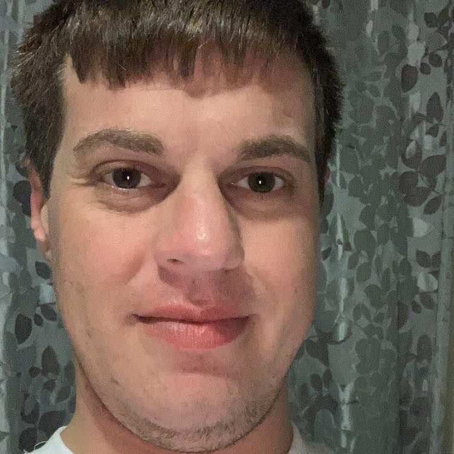

CURRICULUM VITAE OF MATTHEW THOMAS

Here is a little bit about my strengths and weaknesses:
My Strengths:
- Innovative out of the box approach to tackling multiple complex and sometimes interdependent and concurrent tasks.
- Ability to identify the shortest and most efficient route or sequence of actions in order to achieve goals and objectives.
- Persistence and perseverance especially when faced with harsh objection
- Thorough, precise and proud of whatever task is at hand no matter the magnitude/importance.
- Strategic management of negative situations in order to appease and rectify as well as secure long term retention and growth of the business relationships.
- Passionate about offering assistance and mentor ship to colleagues through my personal experiences with similar problems or situations.
My Weaknesses:
- I need to work on exercising more patience when it comes to interacting with people that achieve their end results in a different way than I do.
- An opportunity for development is to learn how to have a good work and home life balance because balance ensures success in both areas.
- Another area for development is to seek the input and guidance of others in order to expedite decision making.
This pretty much summarises who I am and what I am about
Education
- Institution: Damelin
- Qualification: Certificate - Advanced Project Management
- Date completed: April 2010
- Institution: Damelin
- Qualification Obtained: Certificate - Fundamental Project Management
- Date completed: August 2008
- High School: Veritas College Senior School
- Highest Qualification Obtained: IEB senior certificate with exemption
- Year completed: 2004
Employment History
- September 2020 to present: Whiskers and Tails pet sitting services, Springs.
Position: owner
- Visiting clients to feed and water their pets, playing with favorite toys and sleeping over if need be.
- Spending time with client’s pets, making sure that they are not lonely.
- Cleaning up any messes made by client’s pets.
- Reporting back to clients regularly, ensuring their peace of mind.
- Ad-hoc service requirements.
- August 2019 to October 2020: B-Sure Life and Invest, Bedfordview (company no longer exists)
Position: Discovery Financial Advisor
- Selling long term and short term insurance products based on their financial needs.
- Cold calling for new business.
- Performing needs analyses in order to ascertain what advice to give the client.
- Following up on leads provided by the office to convert into business.
- Meeting monthly production targets by selling short and long term insurance products.
- Attending skills and development courses provided by Discovery.
- Ensuring strict compliance requirements are met when giving advice.
- July 2017 to July 2019: Centered BlueStar, Centurion
Position: Sanlam Financial Advisor
- Following the Sanlam process of financial planning which is getting to know the client, gathering information, analysing the client’s needs, making correct recommendations, implementation of recommendations and review/ongoing service to the client.
- Attending training and skills development courses and seminars hosted by Sanlam Life Assurance.
- Following strict house views set out by Centered BlueStar in order to further enhance customer service delivery.
- Preparing highly accurate Financial Needs Analyses based on interactions with clients face to face.
- Implementing tailor made solutions for clients and their families based on the information arising from the Financial Needs Analyses.
- Servicing clients as and when required by the clients as well as by Sanlam, within the strict guidelines set out by Sanlam in order to achieve and grow the business.
- Achieving monthly and quarterly sales targets.
- March 2015 to July 2017: Self Employed
- Attending tender briefings for IT and Scrap Metal tenders.
- Monitoring for viable tenders through various portals. (How2Tender training course by TradeWorld/Ariba)
- Procurement of aluminium scrap from dealers and industrial clients for ingot production purposes.
- Initiating supply relationships of aluminium alloy products to foundries in Gauteng.
- Servicing and maintaining stakeholder relationships by means of visitations and regular contact.
- October 2012 to March 2015: SA Metal Group, Elandsfontein
Position: Business Development Representative
- Canvassing for new suppliers of ferrous and nonferrous scrap metal, nationally.
- Selling of company services and competitive differentiators in order to buy products from prospective customers.
- Generating proposals for once off or indefinite service of scrap/waste management deals.
- Negotiating proposals in terms of price and logistical requirements.
- Closing deals and assigning relevant assets to service new clients.
- Nurturing client relationships by ensuring consistent and efficient servicing of their needs.
- Obtaining relevant competitive intelligence regularly.
- Working closely with logistics, operations and accounts departments to ensure customer centricity.
- Meeting targets dictated by steel mills and foundries.
- June 2006 to October 2012: Veloflex, Springs
Position: Production planning
- Management of finished goods warehouse and its personnel.
- Work in progress and finished goods stock flow control.
- Expediting customer orders against order schedules.
- Maintain accounts and prospect for new ones.
- Reporting raw material requirements to procurement manager daily or as required.
- Raw material and consumables supplier sourcing.
- Forecasting and manufacturing of fast and slow moving items based on inventory and customer orders.
- Spotting potential short and long term risks and planning around them.
- Management of electroplating and heat treatment pricing and logistics.
- Account and inventory administration using Pastel Softline.
- Ensuring efficient resource allocations to production tasks.
- Resolving queries and complaints quickly and effectively.
- January 2006 to May 2006: Far East Rand Hospital, Springs
Position: Part time assistant in pharmacy
- Manufacturing basic solutions for the dispensary.
- Bottling and labelling of basic solutions for dispensary and various wards.
- Assisted with disposal of expired medicines.
- Receiving and checking stock from suppliers.
- Packing medicine on shelves and keeping shelves tidy
- February 2005 to December 2005: Wireless Online, Cape Town
Position: Internal Sales & Technical Support
- Cold calling
- Perform site surveys at prospective customers.
- Up-selling of services and packages.
- Account administration.
- Technical support and relationship management.